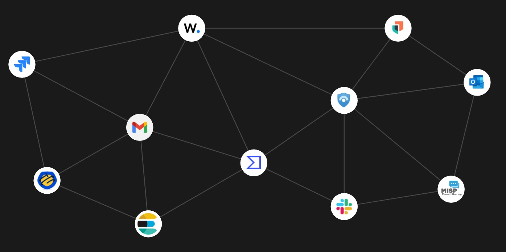
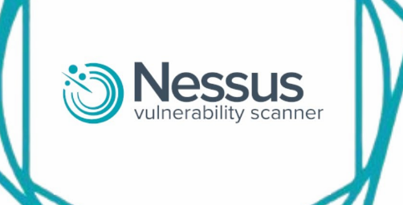

Aktif olarak kurumsal güvenlik operasyonları, mor takım (purple team) analizleri ve SOAR playbook otomasyon süreçleri üzerine odaklanmış bir Siber Güvenlik Uzmanıyım. Sistem-ağ altyapımı ve mühendislik geçmişimden gelen yüksek analitik problem çözme yeteneğimi birleştirerek proaktif siber savunma çözümleri geliştiriyorum. I am a Cybersecurity Specialist actively focused on enterprise security operations, purple team engagements, and SOAR playbook automation workflows. By combining my systems and network infrastructure background with the high analytical problem-solving skills from my engineering past, I develop proactive cyber defense solutions. Ich bin ein Spezialist für Cybersicherheit, der sich aktiv auf Sicherheitsabläufe in Unternehmen (SOC), Purple-Team-Analysen und SOAR-Playbook-Automatisierungsprozesse konzentriert. Durch die Kombination meines System- und Netzwerkinfrastruktur-Hintergrunds mit den ausgeprägten analytischen Problemlösungsfähigkeiten aus meiner Ingenieursvergangenheit entwickle ich proaktive Cyber-Abwehrlösungen. 我是一名网络安全专家，专注于企业安全运营、蓝军/紫军（Purple Team）分析及 SOAR 剧本自动化流程。我将系统网络基础设施背景与工程背景带来的强大分析和问题解决能力相结合，开发出主动的网络防御解决方案。 Я специалист по кибербезопасности, активно занимающийся корпоративными операциями по безопасности (SOC), анализом действий «фиолетовых команд» (purple team) и автоматизацией сценариев SOAR. Объединяя свой опыт в системной и сетевой инфраструктуре с аналитическим подходом инженера, я создаю проактивные решения для киберзащиты.
EDR, NDR, SIEM, SOAR
Cisco, Linux, Sunucu Cisco, Linux, Servers Cisco, Linux, Server Cisco, Linux, 服务器
Siber olay analizi, tehdit avcılığı ve güvenlik otomasyonları konularında uzmanlaşmış, profesyonel bir Siber Güvenlik Uzmanıyım. Tehditleri bertaraf etme, mor takım (purple team) operasyonları, EDR/NDR çözümleri ve SIEM/SOAR iş akışı otomasyonlarına odaklanarak kurumsal altyapıların siber güvenliğini en üst düzeyde sağlıyorum. I am a professional Cybersecurity Specialist specializing in incident analysis, threat hunting, and security automation workflows. By focusing on mitigating threats, purple team operations, EDR/NDR solutions, and SIEM/SOAR integration processes, I secure enterprise infrastructures at the highest standards. Ich bin ein professioneller Spezialist für Cybersicherheit, spezialisiert auf Vorfallsanalyse (Incident Response), Bedrohungssuche (Threat Hunting) und Sicherheitsautomatisierung. Durch meinen Fokus auf Bedrohungsabwehr, Purple-Team-Aktivitäten, EDR/NDR-Lösungen und SIEM/SOAR-Workflow-Automatisierung sichere ich Unternehmens-Infrastrukturen auf höchstem Niveau. 我是一名专业的网络安全专家，专注于安全事件分析、威胁猎杀和安全自动化工作流。通过专注于威胁消除、紫军行动、EDR/NDR 解决方案 and SIEM/SOAR 流程自动化，我以最高标准保障企业基础设施的网络安全。 Я профессиональный специалист по кибербезопасности, специализирующийся на анализе инцидентов, расследовании угроз (threat hunting) и автоматизации процессов безопасности. Фокусируясь на отражении угроз, операциях фиолетовых команд (purple team), решениях EDR/NDR и автоматизации рабочих процессов SIEM/SOAR, я обеспечиваю кибербезопасность корпоративных инфраструктур на высшем уровне.
Bilişim yolculuğuma 2022 yılında Fenerbahçe Üniversitesi'nde tamamladığım 800 saatlik kapsamlı Sistem ve Ağ Uzmanlığı eğitimi ile başladım. Mühendislik geçmişimden kazandığım güçlü analitik problem çözme yeteneğimi bu altyapıyla birleştirerek, siber güvenlik dünyasındaki karmaşık tehditleri proaktif bir yaklaşımla çözüyorum. I embarked on my IT journey with a comprehensive 800-hour System and Network Engineering program completed at Fenerbahçe University in 2022. Combining my strong analytical problem-solving skills acquired from my engineering background with this infrastructure network knowledge, I resolve complex threats in the cybersecurity field using a proactive defensive approach. Meine IT-Laufbahn begann 2022 mit einer umfassenden 800-stündigen Ausbildung zum System- und Netzwerkspezialisten an der Fenerbahçe-Universität. Kombiniert mit den starken analytischen Problemlösungsfähigkeiten aus meinem Ingenieursstudium gehe ich komplexe Bedrohungen in der Cybersicherheitswelt mit einem proaktiven Ansatz an. 我的 IT 职业生涯始于 2022 年，当时在费内巴切大学完成了 800 小时系统的 系统与网络工程 培训。结合我从工程背景中获得的强大分析解决问题能力与网络基础设施知识，我以主动防御的方式解决网络安全领域中的复杂威胁。 Мой путь в IT начался в 2022 году с комплексной 800-часовой программы обучения по специальности Системный и сетевой инженер в Университете Фенербахче. Сочетая свои сильные аналитические навыки решения задач, полученные благодаря инженерному образованию, с глубокими знаниями сетевой инфраструктуры, я проактивно выявляю и нейтрализую сложные угрозы в сфере кибербезопасности.
"Nitelikli Bilişim Uzmanı Yetiştirme" programı kapsamında; Ağ Güvenliği, Sistem Yönetimi, CISCO Cihazları ve Sanallaştırma teknolojileri üzerinde kapsamlı teorik ve pratik uygulamalar gerçekleştirildi. Under the "Qualified IT Specialist Training" initiative; comprehensive theoretical and hands-on practices were executed on Network Security, System Administration, CISCO Devices, and Virtualization systems. Im Rahmen der Initiative „Qualifizierte IT-Spezialistenausbildung“ wurden umfassende theoretische und praktische Anwendungen in den Bereichen Netzwerksicherheit, Systemadministration, CISCO-Geräte und Virtualisierungstechnologien durchgeführt. 在“优秀信息技术专家培训”计划下，在网络安全、系统管理、CISCO 设备和虚拟化技术上进行了全面的理论和实际操作应用。
Mühendislik Eğitimi | Genel Ortalama: 2.81 / 4 Engineering Education | Cumulative GPA: 2.81 / 4 Ingenieursausbildung | Gesamtnotendurchschnitt: 2,81 / 4 工程教育 | 累积 GPA：2.81 / 4

EPP, EDR, NDR, SIEM ve Aktif Dizin çözümlerinin SOAR platformuna bağlanması ve playbook iş akışı otomasyonu. Connecting EPP, EDR, NDR, SIEM, and Active Directory platforms into the Shuffle SOAR orchestrator with automated playbook workflows. Anbindung von EPP-, EDR-, NDR-, SIEM- und Active-Directory-Plattformen an den Shuffle SOAR Orchestrator mit automatisierten Playbook-Workflows. 将 EPP、EDR、NDR、SIEM 和 Active Directory 解决方案连接到 SOAR 平台，实现剧本工作流自动化。 Подключение решений EPP, EDR, NDR, SIEM и Active Directory к SOAR-платформе с автоматизацией сценариев реагирования.

Laboratuvar ortamında Windows, Linux ve Web sunucularının Nessus ile taranması, zafiyet tespiti ve sızma testleri. Scanning Windows, Linux, and Web servers with Nessus, vulnerability mapping, and hands-on penetration testing in laboratory environments. Scannen von Windows-, Linux- und Webservern mit Nessus, Schwachstellenanalyse und Penetrationstests im Labor. 在实验室环境中，使用 Nessus 扫描 Windows、Linux 和 Web 服务器，进行漏洞检测与渗透测试。 Сканирование серверов Windows, Linux и веб-серверов с помощью Nessus, обнаружение уязвимостей и проведение тестов на проникновение в лаборатории.
Türkiye Türkiye Türkei 土耳其 Турция